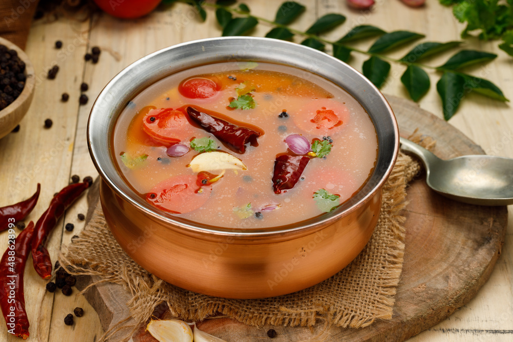

Rasam

Description
Rasam is a tangy and spicy soup that is popular in South Indian cuisine.
It's made with tamarind, tomatoes, and a blend of fragrant spices that create a flavorful and refreshing dish.
Rasam is typically served as a soup or with rice as a main course.
South Indian-Style Rasam
Ingredients:
- 1 small lime-sized ball of tamarind
- 4 medium-sized tomatoes, chopped
- 1 onion, chopped
- 2 cloves of garlic, minced
- 1 green chili, chopped
- 1/2 teaspoon of cumin seeds
- 1/2 teaspoon of mustard seeds
- 1/2 teaspoon of turmeric powder
- 1/2 teaspoon of coriander powder
- 1/4 teaspoon of red chili powder
- Salt to taste
- 1 tablespoon of oil
- Fresh cilantro for garnish
Instructions:
- Soak the tamarind in 1 cup of hot water for 10-15 minutes. Once it's soft, extract the juice and discard the pulp.
- Heat oil in a pan and add cumin seeds and mustard seeds. Fry until they start to sputter.
- Add chopped onions and fry until they turn translucent.
- Add minced garlic and chopped green chili. Fry for another minute.
- Add chopped tomatoes, turmeric powder, coriander powder, and red chili powder. Mix well and cook for 10-15 minutes until the tomatoes are well cooked.
- Add the tamarind juice and salt to taste. Mix well and bring to a boil.
- Garnish with fresh cilantro and serve hot as a soup or with rice as a main course.